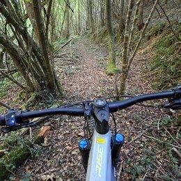
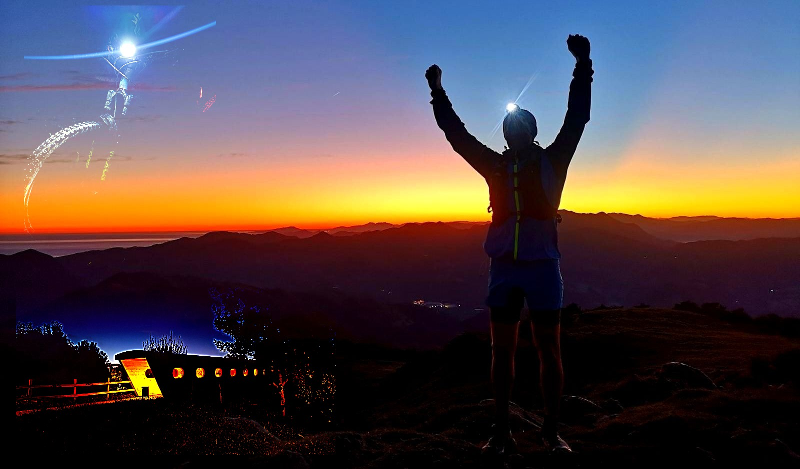
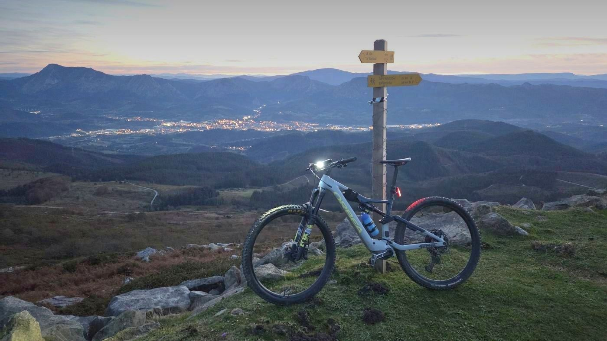
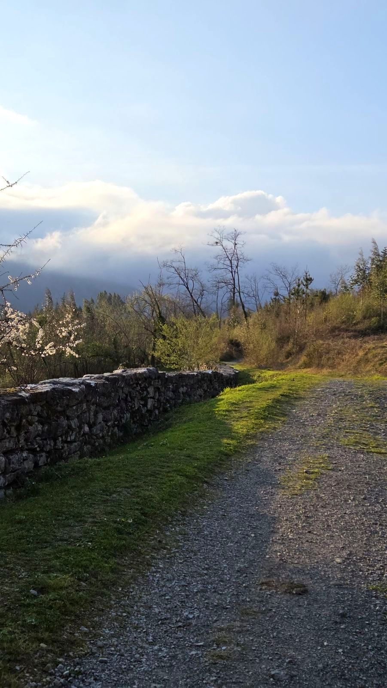
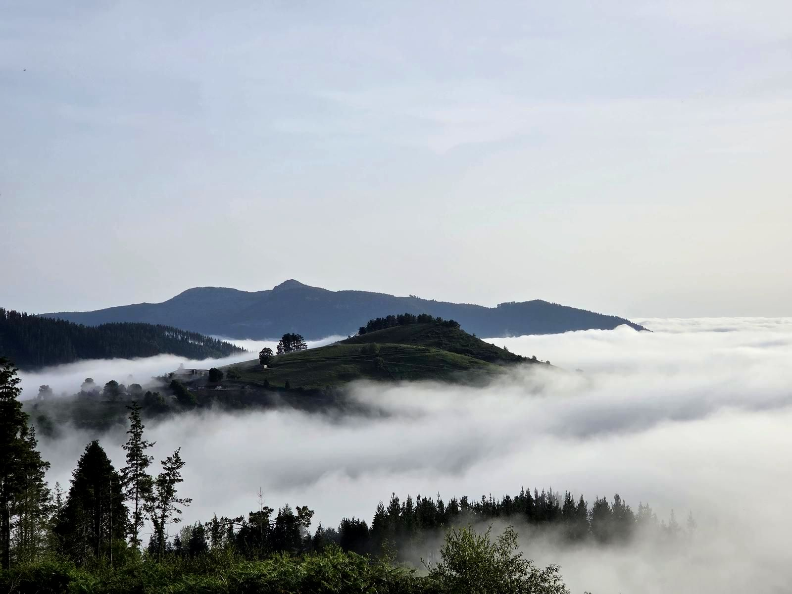
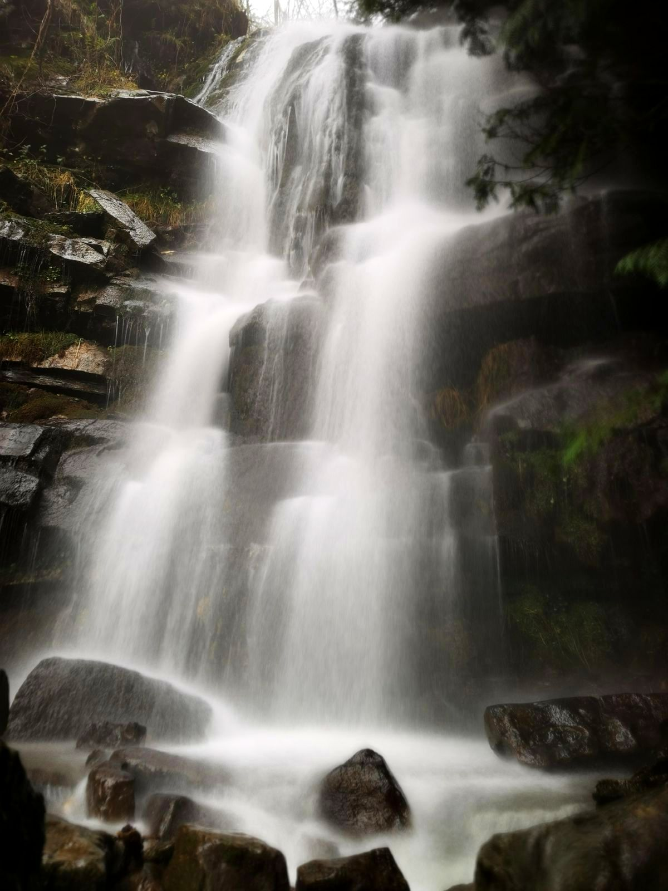
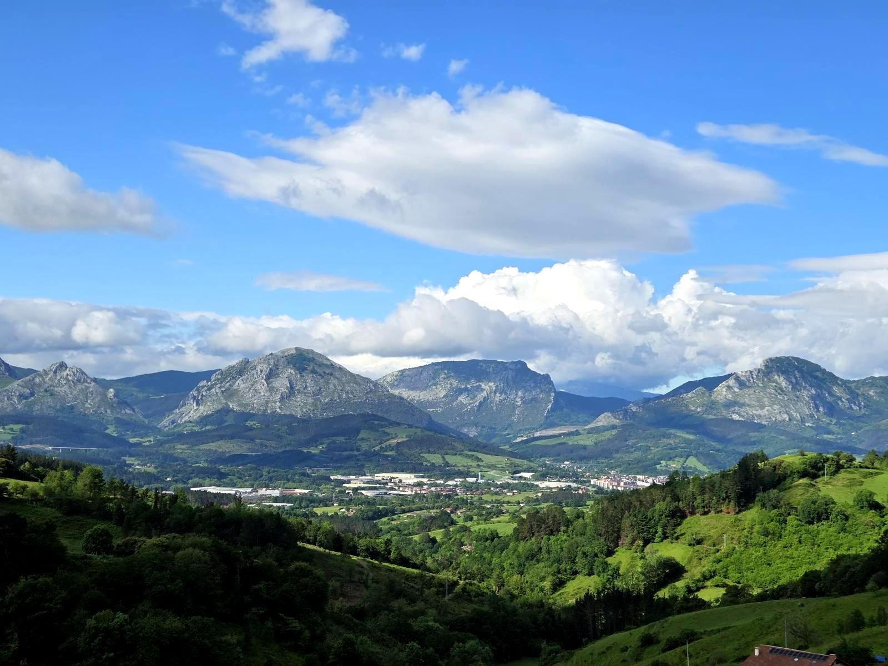
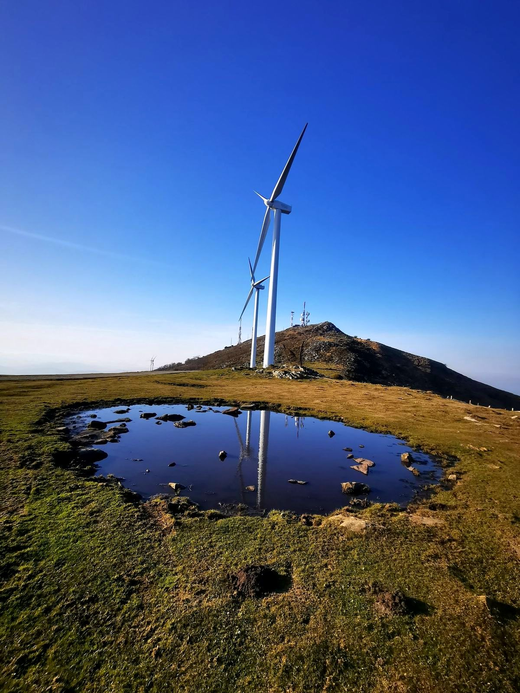
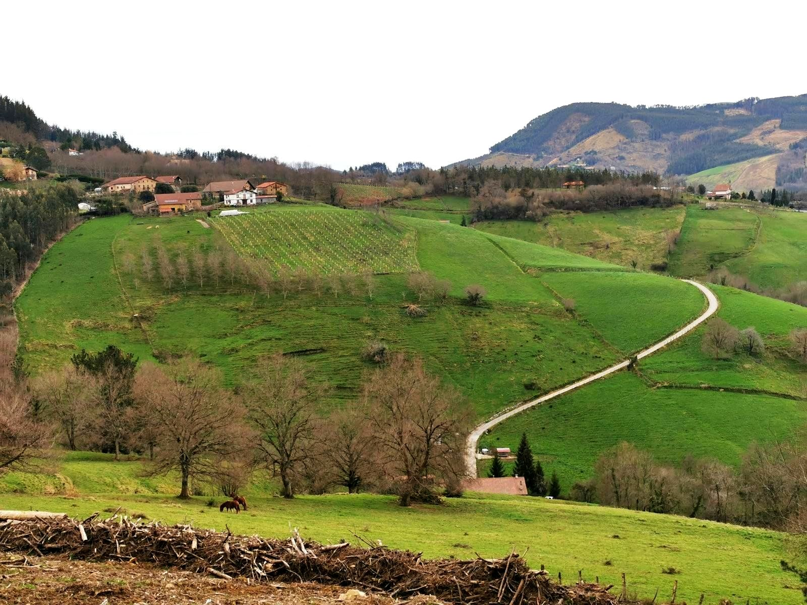
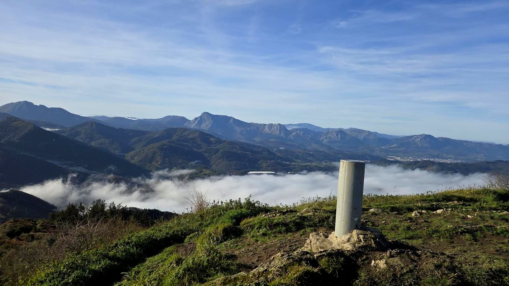

Mallabia/Barrios, montes y pueblos del entorno
Mallabia
a pie y en bici
Rutas por los barrios, montes y pueblos del entorno de Mallabia. Documentadas sobre el terreno, con datos de verdad, no de folleto.
Sobre el terreno
Rutas documentadas
GPS obligatorio
Las rutas están documentadas sobre el terreno, no diseñadas desde un mapa, pero la información es básica: no están señalizadas, así que llevar GPS es casi obligatorio. Se apunta lo más relevante para orientarte por el camino —vistas, fuentes de agua, algún cruce—, pero no sustituye al track cargado en el dispositivo.

Asuntza
bira
Pista entre cemento, piedra y tierra, con un repecho duro al principio —no llega a 300 m—, un desvío técnico opcional a Aginaga y vistas al Duranguesado desde Berano. Grabada sobre el terreno, no propuesta desde un mapa.

Iturzuri, Zengotitagane
subida por la cascada de Gerea
Sendero hasta el punto más alto de Mallabia: cascadas, un dolmen prehistórico y un cresterio con vistas a ambos lados antes de rodear Zengotitagane por el este. Grabada sobre el terreno, no propuesta desde un mapa.

Zenarruza, San Kristobal
y Zengotitagane
Circuito largo desde Trabakua: la colegiata cisterciense de Zenarruza, una ermita de pastores en la ladera del Oiz y el dolmen de Iturzurigana, con dos subidas largas seguidas. Grabada sobre el terreno, no propuesta desde un mapa.

Trabakua, Elgeta
y Argiñeta
Circuito desde Trabakua por ermitas y caseríos del Duranguesado hasta la Necrópolis de Argiñeta, veinte sarcófagos medievales en Elorrio. Grabada sobre el terreno, no propuesta desde un mapa.

Ur Jauziak
Gerea
Sendero corto y familiar hasta la cascada de Gerea, con un mirador entre la antena de Movistar y los aerogeneradores del Oiz. Grabada sobre el terreno, no propuesta desde un mapa.

Zengotitagane, Iturzurigana
y San Cristóbal Txiki
Circuito largo en e-bike desde Trabakua a Zengotitagane, Iturzurigana y Astako Tontorra, con dos ermitas de camino. Grabada sobre el terreno, no propuesta desde un mapa.

Zengotitagane, Axmakur
y Oiz
Ida y vuelta desde Trabakua hasta el Oiz, con dos altos de camino y vistas a la costa cantábrica desde la cumbre. Grabada sobre el terreno, no propuesta desde un mapa.

Osmagain
y Arietzu
Circuito corto desde la Ermita de San Juan, con dos altos de camino y una cruz de piedra en cada uno. Grabada sobre el terreno, no propuesta desde un mapa.

Trabakua
Urko
Circuito desde Trabakua por Arandomendi, Urko y el Collado de Asuntza. Grabada sobre el terreno, no propuesta desde un mapa.
No hay rutas de este tipo todavía.
— Según vayamos documentando más rutas, se añaden aquí.
Dónde aparcar
Puerto de Trabakua · 43,2105° N, 2,5461° O
A 5,7 km de Mallabia pueblo, unos 7 min en coche — casi todas las rutas salen de aquí, con buen aparcamiento.
Justo al lado del aparcamiento hay dos bares: café antes de salir, o cerveza y algo de comer al volver.
Cómo llegarSalidas desde el puerto
Toca una ruta en el mapa para abrir su página.